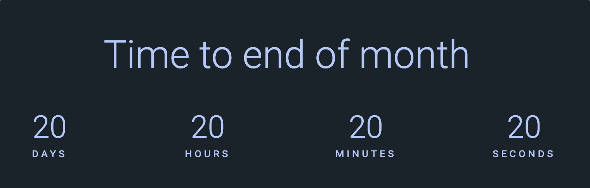

To calculate the number of seconds between them, you divide the difference by 1000. You can also use toMilliseconds('seconds') to make it easier for you.
Now let’s say your two dates are 10 minutes and 20 seconds apart.
const date1 = new Date(2019, 0, 1, 0, 10, 20)
const date2 = new Date(2019, 0, 1, 0, 0, 0)
You want to display their differences in minutes and seconds. To get the difference in minutes, you divide difference by 60000. (You can also use toMilliseconds).
To get the remaining difference after minutes, you use % on the original difference. This time, you set the divisor to 60000. This works because 1 hour is simply 60 minutes.
Let’s make it easy to get the countdown values in days, hours, minutes, and seconds. We’ll make a function called getCountdown and we’ll put the steps above into it.
const getCountdown = (endDate, startDate) => {
// Use either the subtraction method or the modulus method
return {
days,
hours,
minutes,
seconds
}
}
Populating the Countdown
To populate the Countdown component, you need to get the values first. For now, we’ll set the difference to these two dates:
const date1 = new Date(2019, 0, 6, 1, 10, 20)
const date2 = new Date(2019, 0, 1, 0, 0, 0)
You can use getCountdown to get values.
const values = getCountdown(date1, date2)
To populate the Countdown component, you need to change the textContent of the appropriate .timer__box.
const boxes = document.querySelectorAll('.timer__box')
boxes.forEach(box => {
const unit = box.dataset.unit
const value = values[unit]
box.firstElementChild.textContent = value
})
And Voilà!
Counting down
Counting down makes sense only if you’re counting from now to a certain date. That means one of the values must be now.
const now = new Date()
Let’s say we want to count to the end of the month.
const now = new Date()
const nextMonth = new Date(
now.getFullYear(),
now.getMonth() + 1,
1
)
Populating the DOM with the new figures:
const values = getCountdown(nextMonth, now)
const boxes = document.querySelectorAll('.timer__box')
boxes.forEach(box => {
const unit = box.dataset.unit
const value = values[unit]
box.firstElementChild.textContent = value
})
To countdown, we need to do two these things every second:
Get a new set of values from getCountdown
Change the DOM
To perform something every second, we can use setInterval.
const now = new Date()
const nextMonth = new Date(
now.getFullYear(),
now.getMonth() + 1,
1
)
setInterval(_ => {
const now = new Date()
const values = getCountdown(nextMonth, now)
const boxes = document.querySelectorAll('.timer__box')
boxes.forEach(box => {
const unit = box.dataset.unit
const value = values[unit]
box.firstElementChild.textContent = value
})
}, 1000)

Notice the placeholder values (20 days, 20 hours, 20 minutes, and 20 seconds) before the actual countdown started?
This happened because the callback in setInterval begins only after a second. We need to change the DOM before setInterval. The easiest way is to create a function to update the countdown boxes.
const updateBoxes = (endDate) => {
const now = new Date()
const values = getCountdown(endDate, now)
const boxes = document.querySelectorAll('.timer__box')
boxes.forEach(box => {
const unit = box.dataset.unit
const value = values[unit]
box.firstElementChild.textContent = value
})
}
// ...
updateBoxes(nextMonth)
setInterval(updateBoxes, 1000, nextMonth)
Updating the countdown target
The last thing we want to do is update the countdown target with correct value. You can use toLocaleString to do this.